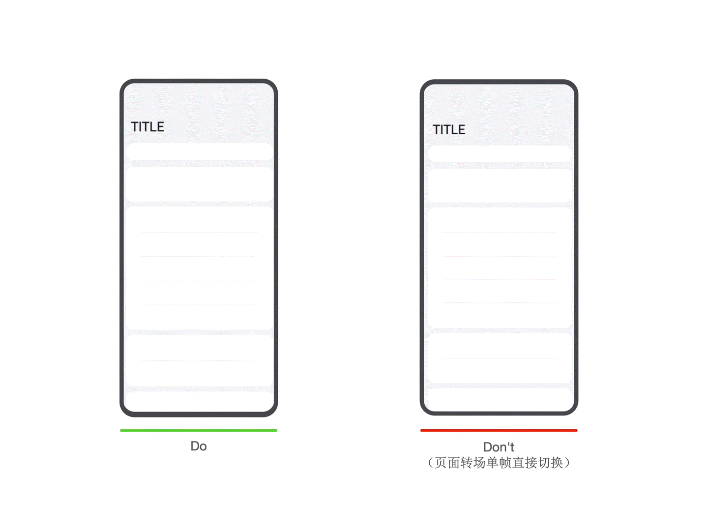
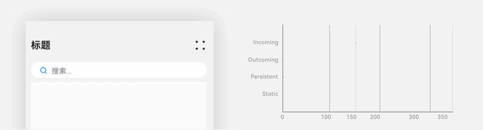
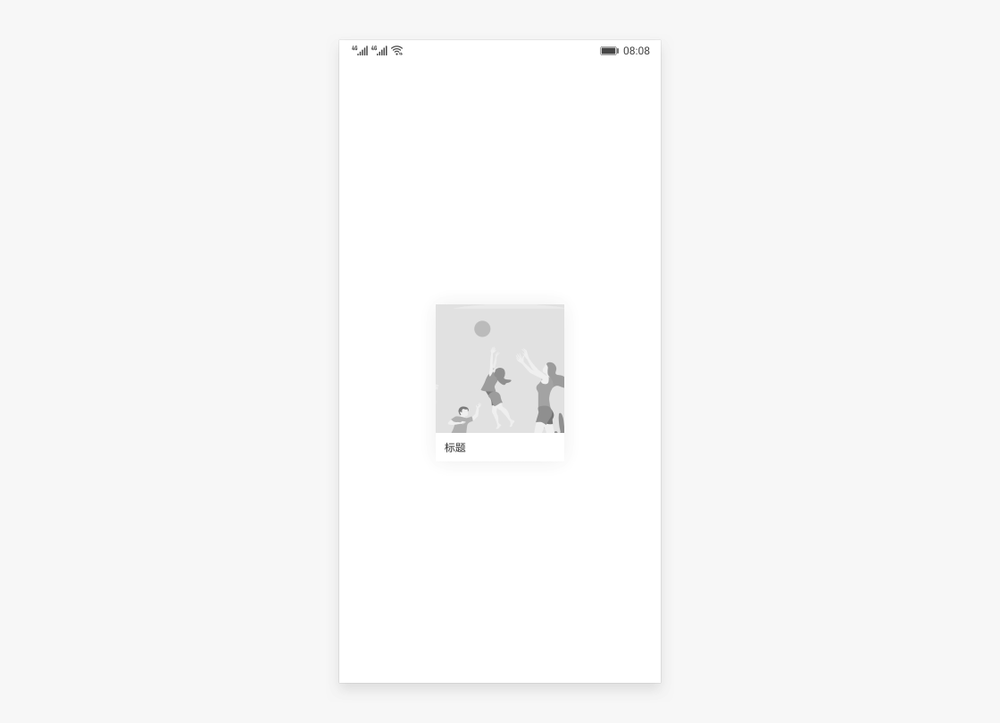
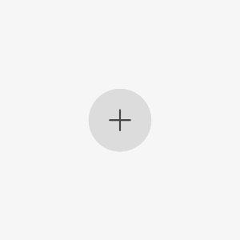

1 一镜到底，畅享无界丝滑视觉之旅
1.1 什么是一镜到底
在日常使用手机或其他智能设备时，我们常常会遇到这样的情况：当从一个页面切换到另一个页面，或从桌面打开应用程序时，画面会突然“卡顿”一下，就像电影播放时突然丢了帧，原本沉浸的体验被瞬间打破。然而，HarmonyOS 的一镜到底动效却能让这一切变得截然不同。下面我们通过一个简单的图片切换场景来更直观地对比常规效果和一镜到底效果的区别。

1.2 一镜到底动效设计
一镜到底是一种通过共享元素进行转场的编排方式，有助于提升用户操作任务的效率，增强视觉的流畅感，是转场设计中重点推荐的技法。
共享元素
共享元素一般是转场前后持续存在的界面元素，即上文提到的持续元素，是在转场发生后希望用户关注到的焦点元素，它增强了转场的连续感。

此案例中，搜索框是共享元素
共享容器
当一组元素在过渡时包含明确的边界，可使用容器来让转换过程有连续感。容器通过大小、高度、圆角等属性进行补间过渡转换，容器内的元素可通过淡入淡出或共享元素的手法进行过渡。

共享动势
无中间属性，无法通过补间变化来实现柔和过渡，需要提取出可用的共享转换属性，来实现前后的平滑过渡。常用的共享运动属性有位移、缩放、旋转等。
共享缩放运动
共享旋转运动

相关文档：转场动效
1.3 如何适配一镜到底
一镜到底的动效有多种实现方式，在实际开发过程中，应根据具体场景选择合适的方法进行实现。
以下是不同实现方式的对比：
|
一镜到底实现方式 |
特点 |
适用场景 |
|---|---|---|
|
不新建容器直接变化原容器 |
不发生路由跳转，需要在一个组件中实现展开及关闭两种状态的布局，展开后组件层级不变。 |
适用于转场开销小的简单场景，如点开页面无需加载大量数据及组件。 |
|
新建容器并跨容器迁移组件 |
通过使用NodeController，将组件从一个容器迁移到另一个容器，在开始迁移时，需要根据前后两个布局的位置大小等信息对组件添加位移及缩放，确保迁移开始时组件能够对齐初始布局，避免出现视觉上的跳变现象。之后再添加动画将位移及缩放等属性复位，实现组件从初始布局到目标布局的一镜到底过渡效果。 |
适用于新建对象开销大的场景，如视频直播组件点击转为全屏等。 |
|
使用geometryTransition共享元素转场 |
利用系统能力，转场前后两个组件调用geometryTransition接口绑定同一id，同时将转场逻辑置于animateTo动画闭包内，这样系统侧会自动为二者添加一镜到底的过渡效果。 |
系统将调整绑定的两个组件的宽高及位置至相同值，并切换二者的透明度，以实现一镜到底过渡效果。因此，为了实现流畅的动画效果，需要确保对绑定geometryTransition的节点添加宽高动画不会有跳变。此方式适用于创建新节点开销小的场景。 |
1.4 一镜到底场景案例
1.4.1 卡片、列表一镜到底
在瀑布流或列表流布局中，当用户点击其中一个卡片或列表项时，应用将执行平滑的转场动画，引导用户从概览页面切换到详情页面。
参考案例
- 最佳实践《一镜到底动效开发实践》。
- Sample示例代码《转场动效合集》。